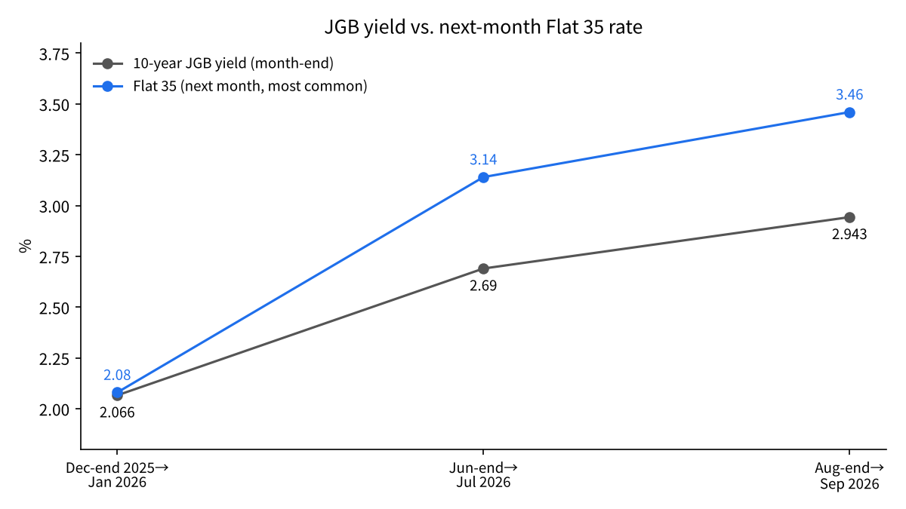
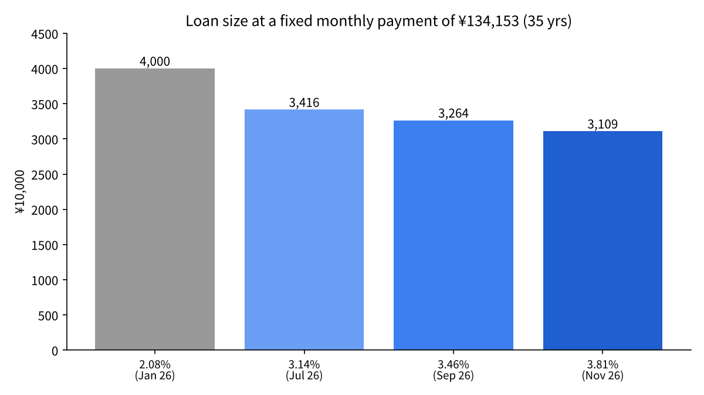

How Fast Does Japan's 2.855% Long-Term Yield Reach Flat 35 Mortgages and Tokyo Condo Prices? Testing It with MOF, JHF and MLIT Data
Japan's long-term interest rate (the 10-year government bond yield) rose to 2.855% on November 13. That is close to double the 1% range of a little over a year ago.
For home buyers, this number does not arrive directly. It arrives through mortgage rates and through the prices of the homes themselves.
The question here: with what lag does a rise in the long-term yield show up in Japan's fully fixed-rate mortgage (Flat 35) and in the price of second-hand condos in Tokyo?
- The long-term yield reaches Flat 35 with a lag of about one month. From end-December 2025 to end-August 2026 the yield rose 0.88 points, while the following month's Flat 35 rate rose 1.38 points.
- Second-hand condo prices in Tokyo's 23 wards stopped rising in June 2026, about five months after the yield climbed to 2.33% in January, and fell for three straight months through August.
- At the same monthly payment, the amount a buyer can borrow shrinks by about 22% when Flat 35 rises from 2.08% to 3.81%. The halt in price gains is within what that shrinkage can explain.
The question and background
The long-term interest rate is the yield on government bonds with 10 years to maturity. This article uses the 10-year JGB yield published daily by Japan's Ministry of Finance[1]. Fixed mortgage rates are widely described as being set on top of this yield[3].
Flat 35 is a fully fixed-rate mortgage of up to 35 years, offered by the Japan Housing Finance Agency (JHF) together with private lenders. The rate is set every month; for loans disbursed in November 2026, with a 21-35 year term and a loan-to-value ratio of 90% or less, it was 3.810% a year[2].
Two terms. The most common rate is the rate used by the largest number of lenders handling Flat 35. The loan-to-value ratio is the loan as a share of the property price; 90% or less means a down payment of at least 10%.
Property prices are not set by mortgage rates alone. Construction costs, labor and sellers' circumstances matter too. This article focuses only on how long it takes a change in rates to reach prices.
Data and method
Four series are used: (1) the MOF 10-year JGB yield[1], (2) JHF's most common Flat 35 rate[2][3], (3) the existing-home sales volume index from the Ministry of Land, Infrastructure, Transport and Tourism (MLIT)[4][5], and (4) second-hand condo prices in Tokyo's 23 wards (converted to 70 square meters) published by Tokyo Kantei[6][7].
For the yield and Flat 35, each month-end yield is paired with the following month's Flat 35 rate, and the size of the rises is compared. Flat 35 rates are set by looking at the previous month's market rates.
For prices, the month in which the rise stopped is identified, and the months between that and the month the yield crossed a threshold are counted. Finally, for a 35-year, equal-installment loan of 40 million yen, the monthly payment at each rate and the amount that can be borrowed at a fixed payment are calculated.
Results
| Month-end JGB yield | Next month's Flat 35 (most common) | Gap (points) |
|---|---|---|
| End-Dec 2025 2.066% | Jan 2026 2.080% | 0.01 |
| End-Jun 2026 2.69% | Jul 2026 3.140% | 0.45 |
| End-Aug 2026 2.943% | Sep 2026 3.460% | 0.52 |

From end-December 2025 to end-August 2026, the yield rose 0.877 points, from 2.066% to 2.943%. Comparing the following months, Flat 35 rose 1.38 points, from 2.080% to 3.460%[3]. The mortgage rate rose more than the yield. Compared with end-June 2025, the yield is up 1.228 points[3].
The reason is that the gap widened from 0.01 to 0.52 points. As yields rose, lenders appear to have added a thicker margin. Flat 35 reached 3.810% in November 2026[2].
On prices, first the period of rising prices. In April 2026, the average second-hand condo in Tokyo's 23 wards cost 127.24 million yen, up 2.4% from the previous month and the 24th straight monthly rise[11].
After setting record highs for 25 straight months through May 2026, those prices fell in June and July[6]. July's 127.24 million yen was still 21.4% higher than a year earlier, but 0.1% lower than June[6]. August fell another 0.4% to 126.77 million yen, a third straight decline[7]. In the same month, Tokyo as a whole fell 0.2% to 112.74 million yen, its first decline in 28 months, while the three surrounding prefectures all rose. The decline is starting from the center[7].
The yield rose to 2.33% on January 20, 2026[3]. From there to June, when prices stopped rising, was about five months.
Meanwhile, transaction volume has not fallen. The seasonally adjusted existing-home sales volume index was 129.8 in September 2025 and 132.4 in July 2026, roughly flat[4][5]. Price gains stopped, but buying and selling continues.
For new condos, the average price in the Tokyo metropolitan area in the first half of fiscal 2026 rose 21.1% to 114.94 million yen, while units released fell 6.0% to 8,601[9]. Reports say buyers are not keeping up with the high prices.
Sensitivity analysis
| Flat 35 rate | Monthly payment (40 million yen, 35 years) | Loan possible at the 2.08% payment |
|---|---|---|
| 2.08% (Jan 2026) | 134,153 yen | 40.00 million yen (base) |
| 3.14% (Jul 2026) | 157,082 yen | 34.16 million yen (-14.6%) |
| 3.46% (Sep 2026) | 164,391 yen | 32.64 million yen (-18.4%) |
| 3.81% (Nov 2026) | 172,580 yen | 31.09 million yen (-22.3%) |

Borrowing the same 40 million yen, the monthly payment rises from 134,153 yen at 2.08% to 172,580 yen at 3.81%, an increase of 38,427 yen. Conversely, keeping the payment at 134,153 yen, the loan shrinks to 31.09 million yen. Even at July's 3.14% it shrank 14.6%, and at September's 3.46% it shrank 18.4%: each rate rise lowered the ceiling.
If the loan shrinks by 20%, the price the same household can pay falls by nearly 20% too. For a buyer who keeps the payment-to-income ratio constant, a rise of just 1.7 points cuts the budget from 40 million yen to the 31 million range. That prices stopped rising and expensive units began to go unsold is consistent with this shrinkage.
Adding the July and September gaps (0.45 to 0.52 points) to today's 2.855% yield gives a December Flat 35 rate of 3.31% to 3.38%. In that case, the shrinkage in borrowing capacity would ease back to 16.6% to 17.5%.
Discussion
There is an opposing view: prices stopped rising not because of rates, but because soaring construction costs made new condos too expensive for buyers[9]. The fall in new units released supports this view. And since second-hand condos in the 23 wards had risen for more than two years, the pause can also be read as a breather after overshooting, unrelated to rates. That rate rises and the price plateau happened at the same time does not, by itself, show causation.
In practice, most Japanese borrowers choose variable-rate mortgages. Variable rates track the Bank of Japan's policy rate, so a rise in the long-term yield first affects those borrowing at fixed rates, and those comparing fixed and variable.
The data also have limits. There are only three month-pairs, too few to fix the lag statistically. Flat 35 has changed as a product, for example with larger discounts for child-rearing households from February 2024, which limits simple comparisons of the most common rate across years[10]. The condo price is an average converted to 70 square meters and also moves with the age and location of units sold.
There are two tests. From December on, does the 23-ward second-hand price keep falling while the yield stays in the 2.8% range? And does the sales volume index start to drop? If volume falls, rates will have begun to cool not just prices but transactions themselves.
Conclusion
The long-term yield reaches Flat 35 with a lag of about one month, and by more than its own rise when lenders thicken their margins. In Tokyo's 23 wards, it showed up in second-hand condo prices about five months after the yield rose to 2.33%, as a halt in the price rise. Transaction volume has not yet fallen. The decline is starting from the center, while surrounding prefectures are still rising. Rates appear to reach prices first by lowering the ceiling on how much buyers can borrow, making the most expensive units the hardest to sell.
How I see it
I have been in the real estate business. When I was borrowing at fixed rates, what scared me was not the rise in rates itself, but property prices falling because rates rose. Today's data seem to be moving in exactly that order.
When rates rise, I expect selling by people who bought with debt to appear first in second-hand condos and tower condos, followed later by large office and commercial buildings. I have no plans to buy either kind of condo; my turn has not come yet. I keep my funds in bank stocks, whose profits grow in a world with interest rates.
Sources
- Ministry of Finance, "Interest Rate" (JGB yields) https://www.mof.go.jp/jgbs/reference/interest_rate/index.htm
- Japan Housing Finance Agency, "Flat 35 interest rates (loans disbursed in November 2026)" https://www.simulation.jhf.go.jp/flat35/kinri/index.php/rates/top/
- Recruit, "Flat 35 interest rate trends" (updated July and September 2026) https://finance.recruit.co.jp/article/?p=15561
- MLIT, "Existing-home sales volume index, December 2025" (Mar 31, 2026) https://www.mlit.go.jp/report/press/content/001991550.pdf
- MLIT, "Existing-home sales volume index, July 2026" (Oct 30, 2026) https://www.mlit.go.jp/report/press/content/002028246.pdf
- Kyodo News, "23-ward second-hand condo prices flat in July" (Tokyo Kantei release, Aug 24, 2026) https://kumanichi.com/articles/2028237
- Tokyo Kantei, "70-sqm price trends, August 2026" (reprint) https://www.mec-h.com/news/43
- Kyodo News, "Japan's long-term yield rises to 2.855%" (Nov 13, 2026) https://www.oanda.jp/lab-education/market_news/kn_2026111301001138/
- Kyodo News, "New condos top 110 million yen, Tokyo area Apr-Sep up 21%" (Real Estate Economic Institute release, Oct 20, 2026) https://kumanichi.com/articles/2048561
- Diamond Real Estate Research, "Flat 35 in November likely in the 3.5% range" (Oct 22, 2026) https://diamond-fudosan.jp/articles/-/1113355
- Tokyo Kantei, "70-sqm price trends, April 2026" (reprint) https://www.mec-h.com/news/38
Photo: Unsplash. Charts by YUKI CAPITAL
I record my daily numbers and decisions on X.